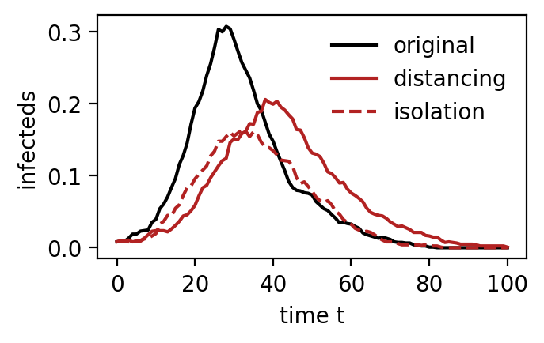

import numpy as np
from EpiCommute import SIRModel3 Quarantine
Here we show how quarantine is implemented in the model and how it affects the model.
Model setup
We again use a simple system, with a random mobility mobility_baseline.
Now we assume that mobility has been reduced due to lockdown measures. The new mobility is given by the matrix mobility_current, which is simply the baseline mobility flows reduced by random factors.
# Number and size of subpopulations
M = 20
subpopulation_sizes = np.random.randint(20,100,M)
# Initialize a random mobility matrix
mobility_baseline = np.random.rand(M, M)
# We assume mobility has decreased due to lockdown
mobility_current = mobility_baseline * (( np.random.rand(M,M) *0.5 ) + 0.5 )mobility_baselinearray([[0.2330532 , 0.57389166, 0.29024527, 0.89422989, 0.50686091,
0.28270586, 0.32846051, 0.28708887, 0.75458035, 0.8266471 ,
0.34034461, 0.10118029, 0.74753997, 0.76298378, 0.35115462,
0.44746339, 0.17724167, 0.54645024, 0.11685322, 0.24986287],
[0.15619752, 0.00560705, 0.52118303, 0.93621983, 0.61321284,
0.0994668 , 0.39422489, 0.88590457, 0.44934397, 0.78673673,
0.4051804 , 0.22646165, 0.69208901, 0.14247538, 0.078316 ,
0.01290892, 0.13808836, 0.35087953, 0.01606855, 0.26224314],
[0.64809468, 0.79025548, 0.14206072, 0.82356954, 0.94944675,
0.5590401 , 0.18432773, 0.33288194, 0.81499126, 0.14864825,
0.90889738, 0.43520464, 0.26589705, 0.48012659, 0.43995644,
0.80872594, 0.17873854, 0.89495727, 0.89728039, 0.13824994],
[0.8497886 , 0.77354019, 0.50574117, 0.73826929, 0.54475537,
0.06603475, 0.17183347, 0.78178783, 0.5441896 , 0.81725611,
0.58800181, 0.93402334, 0.88401221, 0.45812154, 0.92995555,
0.75055475, 0.70972942, 0.2959659 , 0.85060034, 0.38947176],
[0.83987742, 0.94869135, 0.14814991, 0.80049273, 0.44082704,
0.87796731, 0.08558456, 0.38951804, 0.31536993, 0.15721554,
0.14078043, 0.15909814, 0.6855933 , 0.43830389, 0.54085889,
0.84381072, 0.65154919, 0.34855271, 0.14157766, 0.20802486],
[0.49419764, 0.62337888, 0.52378749, 0.81259733, 0.97628155,
0.73976984, 0.27518864, 0.67003453, 0.10632657, 0.84039086,
0.91556962, 0.01063287, 0.51609161, 0.39407064, 0.78858913,
0.55221304, 0.41461217, 0.24251923, 0.38177962, 0.77355447],
[0.94510427, 0.31183855, 0.5440467 , 0.5032494 , 0.93738038,
0.26269231, 0.00865166, 0.41922082, 0.03822995, 0.5383552 ,
0.3393859 , 0.33932098, 0.37138118, 0.97423492, 0.28780384,
0.79524398, 0.55058474, 0.88294587, 0.61585605, 0.79593501],
[0.98919528, 0.64626465, 0.29523161, 0.38202957, 0.3857357 ,
0.43049453, 0.69836672, 0.34403717, 0.85786877, 0.06731312,
0.623847 , 0.14914542, 0.63814368, 0.19396794, 0.11674664,
0.97464837, 0.33623471, 0.0532709 , 0.79236032, 0.15560416],
[0.26628324, 0.44850013, 0.05669129, 0.79639156, 0.85247587,
0.89349543, 0.47098436, 0.56864632, 0.1526145 , 0.39069734,
0.46045417, 0.82628094, 0.33816495, 0.29802132, 0.03198936,
0.0341703 , 0.85561423, 0.14711725, 0.48702866, 0.23885412],
[0.64950265, 0.08582008, 0.26203178, 0.53796871, 0.58046965,
0.02488432, 0.18612007, 0.00277916, 0.69225755, 0.44934725,
0.87834514, 0.07779663, 0.37439333, 0.23461439, 0.00430245,
0.14793746, 0.10092652, 0.08742003, 0.92111993, 0.10005408],
[0.4288997 , 0.35164803, 0.28855874, 0.05224435, 0.2366043 ,
0.0019967 , 0.12508131, 0.8319312 , 0.29427043, 0.22113985,
0.39561558, 0.97122008, 0.11616311, 0.66526585, 0.3426942 ,
0.29211764, 0.55037033, 0.43730272, 0.22269865, 0.69298905],
[0.52285182, 0.1072676 , 0.92286031, 0.6038467 , 0.5045327 ,
0.86763278, 0.00204941, 0.75013694, 0.74035378, 0.16826071,
0.46060761, 0.52179115, 0.27943637, 0.37088734, 0.07598094,
0.37998204, 0.87240297, 0.66755194, 0.82472811, 0.4890318 ],
[0.47756273, 0.52548873, 0.71644623, 0.20592339, 0.42976948,
0.64352071, 0.97101359, 0.15108666, 0.03639851, 0.26202807,
0.20584873, 0.09436512, 0.3262559 , 0.42926928, 0.32311057,
0.48592435, 0.95606318, 0.06914244, 0.60487029, 0.83173358],
[0.17445262, 0.02861254, 0.06341232, 0.03325877, 0.70245985,
0.8815878 , 0.62783629, 0.07427274, 0.31510206, 0.02051211,
0.22563747, 0.84674571, 0.05644503, 0.84388436, 0.36336283,
0.93719583, 0.96431597, 0.73363883, 0.60157637, 0.38150677],
[0.5125039 , 0.52903312, 0.28711515, 0.67283609, 0.27617704,
0.61433969, 0.25306924, 0.66828928, 0.79787346, 0.8891778 ,
0.59941204, 0.21171422, 0.01735886, 0.09582995, 0.39426637,
0.70971941, 0.77173709, 0.24883433, 0.90557238, 0.26754314],
[0.22283868, 0.01576473, 0.54608017, 0.44812837, 0.25009849,
0.09821052, 0.69665803, 0.43815066, 0.8891626 , 0.81119351,
0.01127961, 0.08044193, 0.07776217, 0.82764933, 0.68553649,
0.03213443, 0.31596901, 0.13227524, 0.20894827, 0.13778724],
[0.49757327, 0.26911212, 0.21314078, 0.01137935, 0.8545542 ,
0.75694177, 0.0962889 , 0.24057375, 0.18284088, 0.55421745,
0.51098728, 0.266434 , 0.93267395, 0.86155262, 0.13372022,
0.36757352, 0.04680128, 0.38207362, 0.23014569, 0.35094731],
[0.82522177, 0.76553093, 0.71175437, 0.1935994 , 0.88410179,
0.35184259, 0.80731963, 0.08070864, 0.36133188, 0.68414712,
0.57911114, 0.98574894, 0.11323824, 0.88999394, 0.65766812,
0.2199041 , 0.94473659, 0.03156809, 0.87261642, 0.14979027],
[0.31390347, 0.44858411, 0.76579131, 0.60071401, 0.51022188,
0.4643623 , 0.27166901, 0.5291502 , 0.04876634, 0.73899041,
0.6598645 , 0.9806133 , 0.58613034, 0.81037325, 0.51933781,
0.70743759, 0.98195681, 0.06229618, 0.52413134, 0.68083972],
[0.17121746, 0.59830077, 0.70889309, 0.08030362, 0.95613285,
0.91891702, 0.6702235 , 0.05213729, 0.82301339, 0.88885634,
0.96958434, 0.54740465, 0.95790093, 0.58633463, 0.86272326,
0.11573309, 0.3770104 , 0.45446519, 0.1755432 , 0.74934088]])Quarantine scenarios
Quarantine is implemented in two different ways in the model:
- The
isolationscenario assumes that the reduced mobility means that individual stay at home, and are effectively removed from the dynamices. - The
distancingscenario instead assumes that the reduced mobility corresponds to a reduction in contacts between individuals.
More detailed descriptions of both scenarios are given in the manuscript.
Initialize and run scenarios
We now initialize and run three different variations of the model: no quarantine, isolation, and distancing.
model_no_quarantine = SIRModel(
mobility_baseline,
subpopulation_sizes,
quarantine_mode = None,
outbreak_source=0,
VERBOSE=True
)
model_isolation = SIRModel(
mobility_current,
subpopulation_sizes,
mobility_baseline=mobility_baseline,
quarantine_mode = 'isolation',
outbreak_source=0,
VERBOSE=True
)
model_distancing = SIRModel(
mobility_current,
subpopulation_sizes,
mobility_baseline=mobility_baseline,
quarantine_mode = 'distancing',
outbreak_source=0,
VERBOSE=True
)Run simulations
results_no_quarantine = model_no_quarantine.run_simulation()Starting Simulation ...
Simulation completed
Time: 0min 2.55sresults_isolation = model_isolation.run_simulation()Starting Simulation ...
Simulation completed
Time: 0min 2.52sresults_distancing = model_distancing.run_simulation()Starting Simulation ...
Simulation completed
Time: 0min 3.07sComparison of results
We can see that both quarantine-scenarios “flatten the curve”.
The isolation scenario shows a flatter curve on average (but as we only run one simulation this doesn’t have to be the case.
import matplotlib
import matplotlib.pyplot as plt
matplotlib.rc('figure', dpi=200)
fig = plt.figure(figsize=(3.5,2))
plt.plot(results_no_quarantine['t'], results_no_quarantine['I_total'], label='original', color='k')
plt.plot(results_distancing['t'], results_distancing['I_total'], label='distancing', color='firebrick')
plt.plot(results_isolation['t'], results_isolation['I_total'], label='isolation', color='firebrick', linestyle='--')
plt.legend(frameon=False)
plt.xlabel("time t")
plt.ylabel("infecteds")
plt.show()